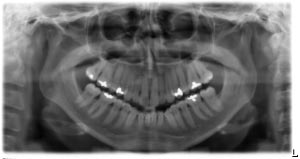

Procedure:
- When the patient’s chin is tipped too low their image will display an exaggerated “smile line.”
- The apices of the mandibular anterior teeth may be cut off but the maxillary anterior teeth and surrounding bone can appear better than in the normal projection.
- The anterior mandible is widened in the vertical dimension and the hyoid bone may be superimposed over the mandible.
- The condyles may approach or exceed the upper edge of the image.
- Please refer to the image below for an example of a panoramic radiograph of a patient positioned with their chin too low during image acquisition.

|